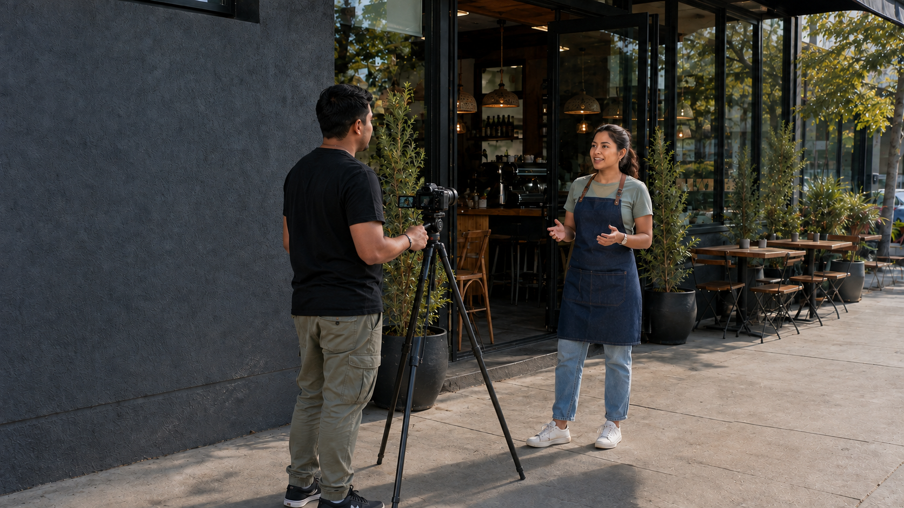

Reels
De 1 a 2 minutos. Espacio para desarrollar tus ideas.
PLAN MENSUAL · CUENCA
Videos, fotografías y carruseles con la identidad de tu negocio. Tú traes las ideas; nosotros las convertimos en contenido listo para publicar.
Requisito para comenzar Este plan es para negocios que ya cuentan con una marca e identidad visual definidas. Revisa lo que necesitas
Pago al inicio de cada mes · Contratación mínima de 1 año

17 piezas al mes4 formatos para comunicar
Una sesión de 5 horasGrabación y fotografía en Cuenca
Entrega completa en 10 díasDespués de finalizar la grabación
EL PUNTO DE PARTIDA
Tu identidad nos da la dirección: cómo se ve tu negocio, a quién le habla y qué lo hace diferente. Con esa base, cada pieza puede comunicar un mensaje coherente y reconocible.
Necesitas una marca definida para iniciar este plan.Manual de marca básico, logotipo, colores, tipografías y recursos gráficos disponibles.
A quién te diriges y qué necesidades tiene el segmento al que quieres llegar.
Qué ofreces, qué te diferencia y cómo quieres posicionar tu marca.
01 / EL PLAN
Un conjunto de formatos para contar lo que haces, mostrar tu marca y mantener activas tus redes.
De 1 a 2 minutos. Espacio para desarrollar tus ideas.
Menos de 30 segundos. Mensajes breves y directos.
Imágenes para comunicar la identidad de tu marca.
4 láminas por carrusel, con textos que tú proporcionas.
Los videos incluyen grabación, edición, música, subtítulos y textos en pantalla.
02 / EL PROCESO
Tres etapas, de los guiones a la entrega. Así avanzamos juntos hasta que tu contenido está listo para publicar.
01 · UNA SEMANA ANTES
Envía los guiones una semana antes de la grabación y los textos de tus carruseles. Los revisamos y aportamos observaciones para facilitar la producción.
02 · DÍA DE PRODUCCIÓN
Una sesión mensual de hasta 5 horas para video y fotografía, en la ubicación que indiques dentro de Cuenca. La sesión fotográfica no es en estudio.
03 · DE 7 A 10 DÍAS DESPUÉS
Las primeras piezas llegan a partir de una semana después de finalizar las grabaciones. Completamos la entrega dentro de los 10 días posteriores a finalizar las grabaciones, en una carpeta en la nube.
DESTINO FINAL
Tu contenido en tus redes.
Recibes los archivos en la nube y tú te encargas de publicarlos.
03 / ANTES DE EMPEZAR
Todo lo que necesitas tener presente para trabajar juntos.
Es un requisito contar con una marca e identidad visual definidas antes de iniciar la producción. Compártenos tu manual de marca básico, recursos gráficos e información sobre tu público objetivo, propuesta de valor y posicionamiento.
Cada pieza incluye hasta dos cambios de postproducción sobre el material producido.
Si es necesario ampliar la sesión mensual, coordinaremos previamente las condiciones.
No se incluyen descripciones para acompañar las publicaciones. Los videos sí incluyen textos en pantalla y subtítulos. Los guiones y los textos de los carruseles los proporciona el cliente.
La contratación tiene un plazo mínimo de un año. El valor es de $200 mensuales sin impuestos, pagados al inicio de cada mes desde el primer mes.
TU MARCA TIENE ALGO QUE CONTAR.
Tu próxima historia
empieza con una idea.